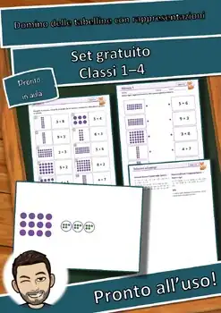
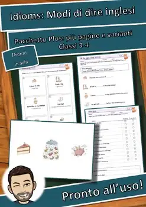
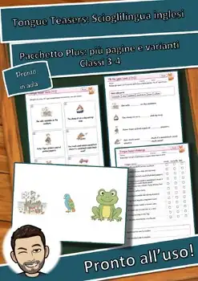
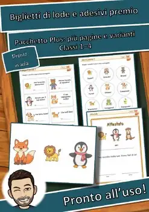
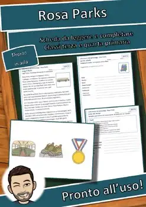
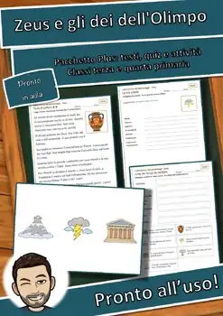
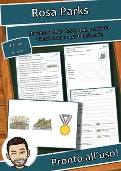
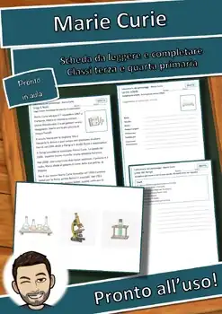
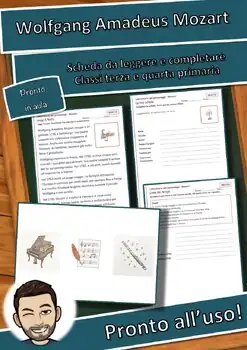

Schede didattiche grade 3
71 schede didattiche per la grade 3: comprensione del testo, ascolto e lessico, da stampare (PDF) con soluzioni.
71 materiali
Tema
Per tema: Animali e natura · Storia e società

Officina domino: Domino delle tabelline gratis (GRATIS)
Officina domino: Domino delle tabelline con rappresentazioni – Pacchetto Plus

Laboratorio di inglese: Read and Colour: Leggi e colora – Set gratuito (GRATIS)

Laboratorio di inglese: Idioms: Modi di dire inglesi – Set gratuito (GRATIS)

Laboratorio di inglese: I have, who has? gratis (GRATIS)

Laboratorio di inglese: Don't say it: Descrivi la parola – Set gratuito (GRATIS)

Laboratorio di inglese: Tongue Teasers gratis (GRATIS)

Laboratorio di inglese: All about me: Mi presento – Set gratuito (GRATIS)

Laboratorio di inglese: Don't say it: Descrivi la parola – Pacchetto Plus

Laboratorio di inglese: Read and Colour: Leggi e colora – Pacchetto Plus

Laboratorio di inglese: Idioms: Modi di dire inglesi – Pacchetto Plus

Laboratorio di inglese: I have, who has? Plus

Laboratorio di inglese: Tongue Teasers: Scioglilingua inglesi – Pacchetto Plus

Officina di classe: Calendario dei compleanni gratis (GRATIS)

Laboratorio di inglese: All about me: Mi presento – Pacchetto Plus

Officina di classe: Poster motivazionali per la classe – Set gratuito (GRATIS)

Officina di classe: Cartellini dell’orario gratis (GRATIS)

Officina di classe: Fogli di scrittura gratis (GRATIS)

Officina di classe: Biglietti di lode e adesivi premio – Set gratuito (GRATIS)

Officina di classe: Poster motivazionali per la classe – Pacchetto Plus

Officina di classe: Cartelloni delle regole di classe – Set gratuito (GRATIS)

Officina di classe: Calendario dei compleanni Plus

Officina di classe: Cartellini dell’orario Plus

Officina di classe: Fogli di scrittura Plus

Officina di classe: Biglietti di lode e adesivi premio – Pacchetto Plus

Officina di classe: Cartelloni delle regole di classe – Pacchetto Plus

Laboratorio delle fiabe: Biancaneve – Disegni da colorare e domino (GRATIS)

Laboratorio delle fiabe: Biancaneve Pacchetto Plus

Laboratorio delle fiabe: Frau Holle – Disegni da colorare e domino (GRATIS)

Laboratorio delle fiabe: La Bella Addormentata da colorare (GRATIS)

Laboratorio delle fiabe: Cenerentola – Disegni da colorare e domino (GRATIS)

Laboratorio delle fiabe: Hansel e Gretel – Disegni da colorare e domino (GRATIS)

Laboratorio delle fiabe: Cappuccetto Rosso da colorare (GRATIS)

Laboratorio delle fiabe: Frau Holle Pacchetto Plus

Laboratorio delle fiabe: La Bella Addormentata Pacchetto Plus

Laboratorio delle fiabe: Cenerentola Pacchetto Plus

Laboratorio delle fiabe: Hansel e Gretel Pacchetto Plus

Laboratorio delle fiabe: Cappuccetto Rosso Pacchetto Plus

Laboratorio dei personaggi: Picasso – Scheda da leggere e completare (GRATIS)

Laboratorio dei personaggi: Picasso – Pacchetto Plus: testi, quiz e attività

Laboratorio dei personaggi: Zeus – Scheda da leggere e completare (GRATIS)

Laboratorio dei personaggi: Helen Keller Scheda (GRATIS)

Laboratorio dei personaggi: Rosa Parks – Scheda da leggere e completare (GRATIS)

Laboratorio dei personaggi: Zeus – Pacchetto Plus: testi, quiz e attività
Laboratorio dei personaggi: Helen Keller Pacchetto Plus

Laboratorio dei personaggi: Rosa Parks – Pacchetto Plus: testi, quiz e attività

Laboratorio dei personaggi: Marie Curie Scheda (GRATIS)

Laboratorio dei personaggi: Mozart – Scheda da leggere e completare (GRATIS)
Nessun materiale trovato: prova con un'altra parola o un altro filtro.